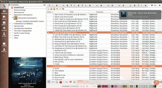
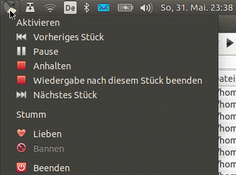
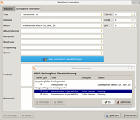

Clementine
Dieser Artikel wurde für die folgenden Ubuntu-Versionen getestet:
Ubuntu 16.04 Xenial Xerus
Ubuntu 14.04 Trusty Tahr
Zum Verständnis dieses Artikels sind folgende Seiten hilfreich:
Aktivieren eines PPAs, optional
Ein einzelnes Paket installieren, optional
Clementine  ist eine plattformübergreifende Qt 4-Portierung des ehemaligen KDE-Audioplayers Amarok 1.4. Von den Entwicklern werden Installationspakete für diverse Linux-Distributionen, Mac OS X und Windows angeboten.
ist eine plattformübergreifende Qt 4-Portierung des ehemaligen KDE-Audioplayers Amarok 1.4. Von den Entwicklern werden Installationspakete für diverse Linux-Distributionen, Mac OS X und Windows angeboten.
Funktionen:
Durchsuchen und Abspielen der lokalen Musiksammlung
Internetradio hören (Spotify, Grooveshark, SomaFM, Magnatune, Jamendo, SKY.fm, Digitally Imported, JAZZRADIO.com, Soundcloud, Icecast- und Subsonic-Server)
Eigene Lieder aus der Cloud abspielen (u.a. Dropbox, Google Drive und OneDrive)
Erstellen intelligenter sowie dynamischer Wiedergabelisten
Wiedergabelisten mit Reitern, Im- und Exportieren von M3U, XSPF, PLS und ASX
Unterstützung für Cuesheets
Abspielen von Audio-CDs
Audiovisualisierung via projectM
Liedtexte, Biografien und Fotos der Künstler
Konvertieren von Musik in die Formate MP3, Ogg Vorbis, Ogg Speex, FLAC oder AAC
Abrufen und automatische Vervollständigung fehlender Metadaten (Tags) via MusicBrainz
Podcasts entdecken und herunterladen
Fehlende Albentitelbilder von Last.fm und Amazon herunterladen
On-Screen Display - beim Liedwechsel werden Informationen über das aktuelle Stück auf dem Bildschirm angezeigt. Dabei kann Clementine sowohl eigene Benachrichtigungen verwenden als auch die des Systems (siehe Benachrichtigungsdienst)
Fernsteuerung mittels Android, Wii-Fernbedienung, MPRIS oder Befehlszeile
Kopieren von Musik auf iPod, iPhone, MTP- oder USB-Massenspeicher
Warteschlangenverwaltung
|  |
| Hauptfenster |
|  |
| Kontextmenü |
|  |
| Metadaten bearbeiten |
Clementine benutzt für die lokale Musiksammlung eine SQLite-Datenbank, in der die Informationen für alle Stücke der Musiksammlung (wie Titel, Interpret, Album oder Erscheinungsjahr) gespeichert werden. Um die eigene Musik besser zu organisieren, können Tags von MP3- und OGG-Dateien direkt bearbeitet werden.
Installation¶
Das Programm kann direkt aus den offiziellen Paketquellen installiert werden:
clementine (universe)
 mit apturl
mit apturl
Paketliste zum Kopieren:
sudo apt-get install clementine
sudo aptitude install clementine
PPA¶
Das folgende "Personal Package Archiv" (PPA) [2] enthält aktuelle Versionen auch für ältere Ubuntu-Versionen.
Adresszeile zum Hinzufügen des PPAs:
ppa:me-davidsansome/clementine
Hinweis!
Zusätzliche Fremdquellen können das System gefährden.
Ein PPA unterstützt nicht zwangsläufig alle Ubuntu-Versionen. Weitere Informationen sind der  PPA-Beschreibung des Eigentümers/Teams me-davidsansome zu entnehmen.
PPA-Beschreibung des Eigentümers/Teams me-davidsansome zu entnehmen.
Damit Pakete aus dem PPA genutzt werden können, müssen die Paketquellen neu eingelesen werden.
Nach dem Aktualisieren der Paketquellen kann Clementine wie oben angegeben installiert werden. Wer immer auf dem aktuellen Entwicklungsstand sein möchte, kann alternativ ein weiteres PPA  mit täglich automatisch erstellten Paketen nutzen.
mit täglich automatisch erstellten Paketen nutzen.
Verwendung¶
Clementine¶
Die Verwendung ist prinzipiell wie die des alte Amarok - siehe Archiv/Amarok 1.4. Ein deutschsprachiges Handbuch zum Programm ist leider nicht vorhanden, allerdings gibt es ein englischsprachiges Wiki .
Clementine Remote¶
Ab Version 1.3 ist es möglich, Clementine mit der Android-App Clementine Remote zu steuern. Bei älteren Ubuntu-Versionen empfiehlt es sich, dazu das PPA von Clementine hinzuzufügen. Wenn man ganze Alben für unterwegs auf das Smartphone laden will, sollte man zuerst eine Bibliothek in Clementine erstellen.
Problembehebung¶
Multimediatasten funktionieren nicht¶
Bluetooth-Geräte¶
Clementine kann mit Hilfe des Remuco-Plugins Befehle von Bluetooth-Geräten (z.B. Kopfhörern) entgegen nehmen. Dafür muss man folgendes Paket zusätzlich installieren:
remuco-clementine (universe (nur in 14.04))
mit apturl
Paketliste zum Kopieren:
sudo apt-get install remuco-clementine
sudo aptitude install remuco-clementine
Hierbei kann ein kleiner Bug auftreten: Man muss die Pause-Taste zweimal drücken, damit Clementine reagiert. Anschließend sollte man den Befehl remuco-clementine zu den Autostart-Befehlen hinzufügen.
GNOME 3¶
Hier hilft es, wenn man die globalen Tastaturkürzel von GNOME 3 für die Mediensteuerung (also z.B. Wiedergabe, vorheriger und nächster Titel) deaktiviert und in Clementine manuell globale Tastenkürzel festlegt. Nach einem Neustart von Clementine sollten die Tasten wieder funktionieren.
KDE¶
Hier kann man unter "Systemeinstellungen -> Kurzbefehle und Gestensteuerung -> Eigenen Kurzbefehle" eine neue Gruppe Clementine erstellen. Anschließend erstellt man über einen Rechtsklick  auf diese Gruppe "Neu -> Globaler Kurzbefehl -> Befehl/Adresse" je einen neuen Kurzbefehl. Unter "Auslöser" legt man nun die gewünschten Multimedia-Taste fest und gibt unter "Aktion" die folgenden Befehle an:
auf diese Gruppe "Neu -> Globaler Kurzbefehl -> Befehl/Adresse" je einen neuen Kurzbefehl. Unter "Auslöser" legt man nun die gewünschten Multimedia-Taste fest und gibt unter "Aktion" die folgenden Befehle an:
| Eigenen Kurzbefehle | |
| Aktion | Auslöser |
| Wiedergabe/Pause | clementine -t |
| Stop | clementine -s |
| Weiter (nächster Titel) | clementine -f |
| Zurück (vorheriger Titel) | clementine -r |
Alternativ kann man auch im Feld "Eigene Kurzbefehle" per diese Shortcut-Datei importieren: Clementine-Multimedia-Tasten 
Xfce¶
Hier wird ähnlich wie bei KDE den Tasten über "Einstellungen -> Einstellungen -> Tastatur -> Tastenkürzel für Anwendungen" ein Befehl zugeordnet (siehe Xfce-Einstellungen). Die Befehle sind die gleichen wie im obigen Abschnitt zu KDE.
Fehlendes Plugin zur Wiedergabe von WMA-Dateien¶
Zur Fehlerbehebung bei nicht funktionierender Wiedergabe mit WMA-Dateien siehe Clementine won't play .wma und weitere Beiträge im Forum.
Links¶
Projektseite
- mit Neuigkeiten und BildschirmfotosFAQ
- häufige Fragen und Antworten
Clementine Remote
- Fernsteuerung für Android; ab Clementine 1.3AudioPlayer
 Programmübersicht
Programmübersicht
- Erstellt mit Inyoka
-
 2004 – 2017 ubuntuusers.de • Einige Rechte vorbehalten
2004 – 2017 ubuntuusers.de • Einige Rechte vorbehalten
Lizenz • Kontakt • Datenschutz • Impressum • Serverstatus -
Serverhousing gespendet von